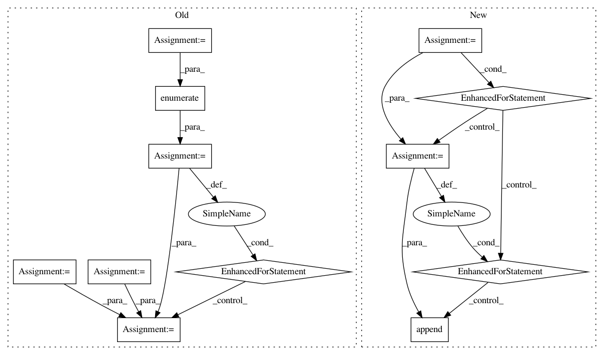

151f9e7d141372ce45fc4367b81385eeccc95093,sequenceLabelling/preprocess.py,,to_vector_simple_with_elmo,#Any#Any#Any#Any#Any#,256
Before Change
the ELMo contextualized embeddings, introducing <PAD> and <UNK>
padding token vector when appropriate
window = tokens[-maxlen:]
// TBD: use better initializers (uniform, etc.)
x = np.zeros((maxlen, embeddings.embed_size), )
if lowercase:
x_elmo = embeddings.get_sentence_wector_ELMo(lower(tokens))
else:
x_elmo = embeddings.get_sentence_wector_ELMo(tokens)
// TBD: padding should be left and which vector do we use for padding?
// and what about masking padding later for RNN?
for i, word in enumerate(window):
if lowercase:
word = _lower(word)
if num_norm:
word = _normalize_num(word)
x[i,:] = np.concat(
embeddings.get_word_vector(word).astype("float32"),
x_elmo[i]
)
return x
def to_casing_single(tokens, maxlen=300):
After Change
padding token vector when appropriate
subtokens = []
for i in range(0, len(tokens)):
local_tokens = []
for j in range(0, min(len(tokens[i]), maxlen)):
if lowercase:
local_tokens.append(_lower(tokens[i][j]))
else:
local_tokens.append(tokens[i][j])
subtokens.append(local_tokens)
return embeddings.get_sentence_vector_with_ELMo(subtokens)
def to_casing_single(tokens, maxlen=300):
In pattern: SUPERPATTERN
Frequency: 3
Non-data size: 12
Instances
Project Name: kermitt2/delft
Commit Name: 151f9e7d141372ce45fc4367b81385eeccc95093
Time: 2018-06-20
Author: patrice.lopez@science-miner.com
File Name: sequenceLabelling/preprocess.py
Class Name:
Method Name: to_vector_simple_with_elmo
Project Name: home-assistant/home-assistant
Commit Name: d91fe792c56d872e9054fd608978fd51a99142dd
Time: 2015-11-27
Author: happyleaves.tfr@gmail.com
File Name: homeassistant/components/light/limitlessled.py
Class Name:
Method Name: setup_platform
Project Name: home-assistant/home-assistant
Commit Name: 5fba67f6c37a7c36935e4f9cb227b21f1b7a1c7b
Time: 2015-11-29
Author: happyleaves.tfr@gmail.com
File Name: homeassistant/components/light/limitlessled.py
Class Name:
Method Name: setup_platform